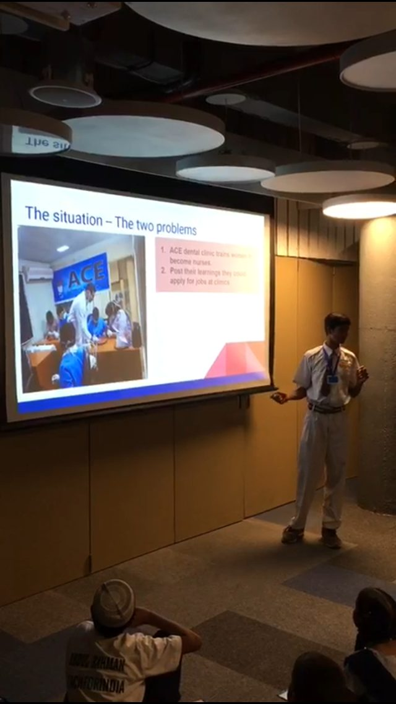

The student who almost dropped out, and the path that led him to NASA
I believe every child deserves to be seen and heard, and that where a child is born should never decide how far they can go. Teach For India is where that belief was tested every day.
As a fellow, I taught 400 students in an under-resourced public school in southern India. My weeks often ran past 65 hours: planning lessons, spending time with families to understand what their children needed, and working with funders and city leaders to shape support around those needs. Fellows across the country traded ideas constantly, and an approach that worked in one city could be adapted for another.
One of my students was 17 and sitting in a seventh-grade classroom. His family had migrated again and again across the country in search of work, and his education had been interrupted each time. As his family's needs grew, he was ready to leave school for immediate income.
I understood the pressure. But we talked about what staying could make possible: the difference between short-term earnings and the long-term mobility an education can unlock. He chose to stay.
Years later, he was on a path to represent India at NASA, a story covered by several national news outlets. Across the school, sustained work with families and the community helped cut dropout by 45%.
